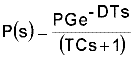
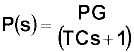
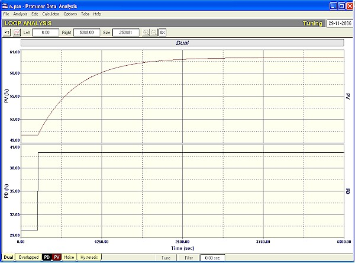
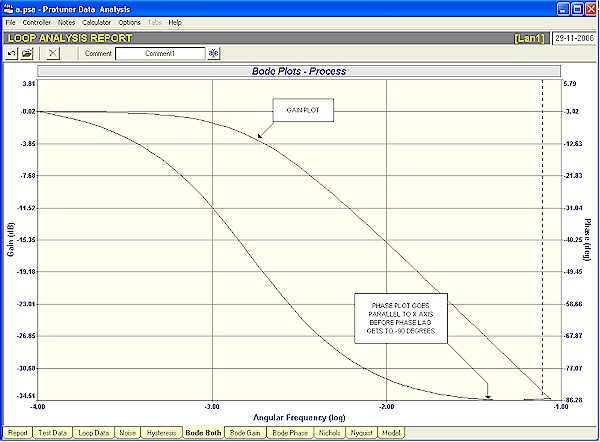
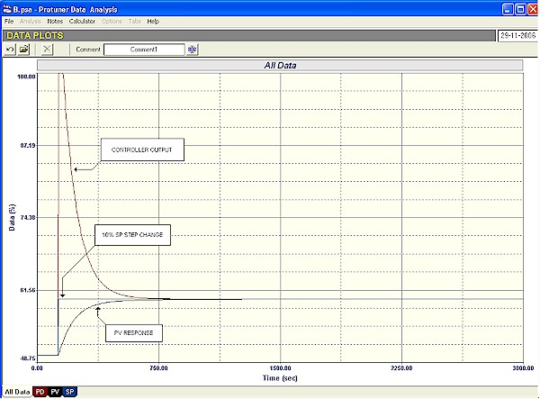
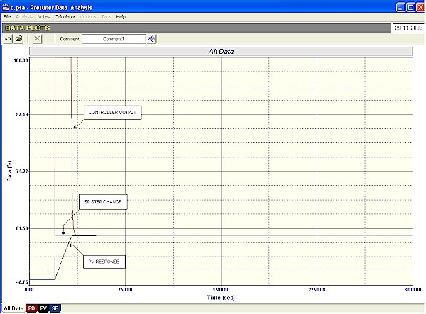

|
| [Home] [About us] [Contact us] [Training] [Optimisation services] [Protuner] |
| [Loop signatures] [Case histories] [Continuous loop performance monitoring] |
|
Loop Problem Signatures Part 2 11. DYNAMICS OF SIMPLER PROCESSES The pure LAG, self-regulating process In the last two articles in this series, the tuning of simple first order lag, deadtime, self-regulating processes were discussed. The basic transfer function of such a process is:  The term "controllability factor" was defined as DT/TC, and it was mentioned that the larger it gets, the more difficult it is to control, and as it gets smaller, the easier the control. The last article dealt with a controllability factor of infinity, which was called "a pure deadtime, self-regulating process". In this article we will go to the other extreme and deal with controllability factor of zero, which will be termed as a "pure lag, self-regulating process". This is a process with no deadtime whatsoever.  The open loop response to a step change on the PD of such a process is shown in Figure 1. The process has a single time constant of 600 seconds, and a process gain of one. The dead time is also zero. (This can be easily established by graphical analysis using the techniques shown in the first Loop Signature series, or by analysis using a Protuner Loop Analyser).  Figure 1 Please note that the basic identification of the dynamic elements can be nearly all done by examining the open loop response to such a step change of PD. Looking at Figure 1 for example, one can clearly see the typical PV exponential response with its sharp break away from the horizontal. It can also be seen that the deadtime is negligible. This response allows us to immediately recognise this as a pure lag, self-regulating process. Where do you find such processes in real plants? They are typically sometimes found on temperature control loops where there is one lag in the process, which is so large, that any other lags and deadtime are insignificant in comparison. Towards the end of the article I will also discuss certain other processes, which may be equated to pure lag, self-regulating processes. If you ever identify such a type of process, here is your chance to become a hero, as for reasons that will become clear soon, you can probably tune it much faster than the tuning which may be suggested on a tuning packet. To understand why this is so have a look at Figure 2, which is the open loop Bode plots of gain and phase versus frequency of this process as generated by the Protuner. The gain plot is the typical first order lag response dropping off by 3 db at the corner frequency (which is the reciprocal of the time constant), and which would normally finish off at the crossover (ultimate frequency) at a slope of –20 db/decade. However the phase plot here is different and of extreme interest. It starts off as normal at 0º phase lag, but instead of carrying on down until it reaches -180º at the crossover frequency, it suddenly starts curving up again at about -60º and eventually ends up travelling parallel to the X axis at just above -90º phase angle.  Figure 2 In Loop Signature P2-7 you will remember that instability can only occur when unity, or greater gain is reached, and the phase angle is simultaneously at -180º. The ultimate gain was also defined as that gain which when added to the open loop gain produces a gain of unity (0db) at the -180° phase point on the Bode open loop plot. In this particular case it means that the process can never go unstable, as the phase angle can never get to 180°. In other words, the ultimate gain of a pure lag, self-regulating process is infinity. This means that theoretically you can insert any tuning you wish into the controller and the loop would always remain stable in automatic! I have mentioned before in earlier Loop Signature articles that it is the deadtime that really introduces phase lag, and this illustrates this. Figure 3 shows the closed response of this process to a setpoint step change with the Protuner fast tune of  Figure 3 How does the Protuner get its values in this case? Basically it sets the I equal to the process time constant as described in a previous Loop Signature. However the proportional gain is an arbitrary value, which has been based on the experience of the control engineer responsible for the Protuner's design. Many people do not like putting high gains in controllers and the designer has taken this into consideration. However if you have a really slow pure lag self-regulating process, possibly one taking hours to responds, then there is nothing to stop you putting in much higher gains in the controller, if you wish to do so, without the process going unstable. (Note that if there is a lot of noise in the PV, then high gains could result in unacceptable valve wear due to amplification through the controller onto the PD. In such a case a relatively small filter will eliminate this). Figure 4 shows the closed loop response again, but this time with P = 80 and I = 597 seconds/repeat. The response is now about 4 times faster! On a really slow process this can be really significant and time saving.  Figure 4 Now in reality, there is always some deadtime in a process control loop. The controller alone normally has a scan rate of 1 or 2 seconds. Therefore in a real loop like this one has to be careful of putting any gain whatsoever into the controller, because you will eventually get instability. However the following rule of thumb works extremely well and should be remembered: If DT<0.1 x TC, then treat the process as a pure lag self regulating process. This generally works well in practice. However care must be taken when doing the tuning. I generally do the open loop test and then model the process in the Protuner. If I am satisfied that this indeed a good model, and really representative of the true process, and that it can be treated as a pure lag self-regulating process, then I try the tuning in the Protuner's simulator until I get what I feel is the most appropriate tuning to meet the control requirements. Now a very interesting point can be considered: It may be remembered in the very early Loop Signature articles in the first series (Part 1, available on CD outside South Africa), that the two classes of processes, viz. self -regulating and integrating, were discussed. It was mentioned that it was sometimes very difficult to decide which class certain processes encountered in plants belonged to. One particular example was level control in a gravity feed tank, where there is no pump on the output of a tank, and the head of liquid in the tank provided the pressure for the outflow from the tank. Therefore as the level drops, the outflow rate will decrease, hence causing the process gain of the tank to change. If the change in PD, which caused the level to drop, was not too great, then the flows in and out of the tank would eventually balance themselves out and the level would come to stability. In the long term this would appear to be a self -regulating process. However it was then said that as the process started initially as an integrating process, you would tune it as an integrator, as you always tune a process in the class according to the way it starts reacting to the change on PD. In reality one can find many other examples similar to this such as large capacity pressure controls, and also with many temperature processes. None of these processes in the real world can ever carry on integrating to infinity. They must all eventually reach some equilibrium, or balance point. In the long term they appear to be self-regulating. However they may possibly be tuned better as integrators, as they start with a ramp that changes extremely slowly. Now if one was to analyse the long term dynamics of all these processes, you would find that once they have reached equilibrium they in fact can be equated to pure lag self-regulating processes, which as shown above are very difficult to make unstable, and can be tuned within reason with any parameters and not go unstable. Therefore it is quite acceptable in these cases to tune then as integrators taking the initial ramp into account to obtain the process gain required for the tuning. In fact many of the temperature controller manufacturers use integrating tuning as a standard in their self-tuning software. It works fine for many cases of slower temperature processes. However a word of warning before trying this: Always ensure the deadtime is less than a tenth of the time constant. Also ensure that only a single dominant lag exists in the process, because multiple lags have the same effect as deadtime, as will be shown in the next Loop Signature article. To summarise, if you do come across a process that equates to the dynamics described above, you may be able to really improve the control response dramatically by applying the principles detailed above. Michael
Brown is a specialist in control loop optimisation, with many years of
experience in process control instrumentation. His main activities are
consulting, and teaching practical control loop analysis and
optimisation. He gives training courses which can be held in clients'
plants, where students can have the added benefit of practising on live
loops. His work takes him to plants all over South Africa, and also to
other countries. He can be contacted at:
|